FUSE
- Data visualization
- Co-creation
- Usability testing
- Figma
The challenge
Design a desktop interface that visualizes complex data for students. Imagine an interface transforming complex data into captivating stories that practically anyone can understand. This is the vision of FUSE – an innovative data visualization interface developed for and by students. Through an iterative design process, FUSE has developed into a prototype that uses authentic data and real text examples, to replace placeholders and imprecise visualizations that lead to confusion.
The solution
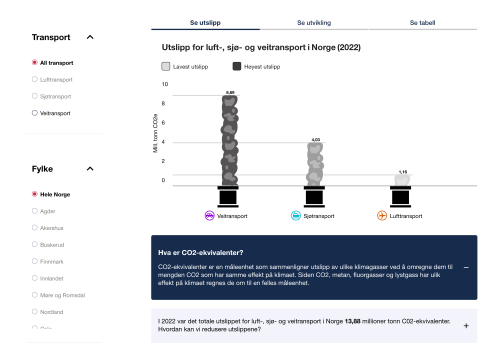
Compare
Lets the user compare the size difference of separate categories. A vertical bar chart, represented as animated smoke coming out of an industrial pipe – the higher the bar, the darker and denser it becomes, just like smoke in real life.
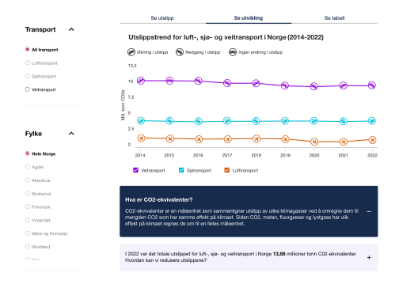
Explore
Lets the user explore the development of each category. A line chart where the data points indicate whether there has been an increase, decrease or no change from the previous year.
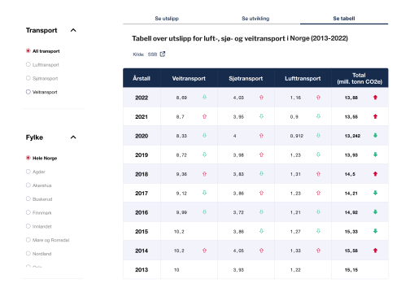
Verify
Lets the user verify the values and sources behind the visualizations. A table with the exact values from the data set, where arrows show an increase (red) or decrease (green) from the year before.
Design process
- Semi-structured interviews
- Focus group
- Workshop
- 1st prototype
- 1st usability test
- 2nd prototype
- 2nd usability test
- Final prototype
- 3rd usability test
The process
Semi-structured interviews
Six interviews with students from different backgrounds and study programs identified their knowledge of and interest in climate, media habits, preferred ways to interact and thoughts on data visualization. This formed the basis of our target group.
Focus group
A focus group with experts validated the interview findings and compared the students' needs to business interests and technical constraints, making it easier to prioritize and understand the decision-making behind a data visualization.
- The Producer
“The data must be true”
“What is important depends on the purpose”
- The Client
“The purpose of data visualization, in my opinion, is to convey a message”
- The Customer
“The storytelling should emphasize something and fit the environment”
“Context is important”
Workshop
A co-creation workshop with eight students in four parts: individual work (Crazy 8 and storyboards), presentation and feedback using the optimist, pessimist and opportunist roles, group work, and a final vote.
- Part 1
Individual work
Each participant sketched ideas on their own, using Crazy 8 and storyboards.


- Part 2
Present and feedback
Everyone presented their ideas, and the others gave feedback wearing one of three hats.
- The Optimist
Share what you believe is good and should be further focused on.
- The Pessimist
Share problem areas and challenges that may lead to conflict.
- The Opportunist
Share how things could be done differently or better.
- Part 3
Group work
In groups, the participants combined the strongest ideas into shared concepts.
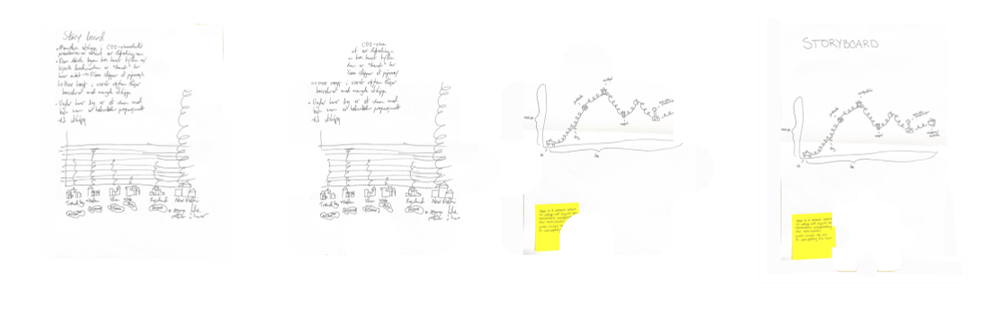
- Part 4
Voting
The groups presented their concepts, and each participant placed dot stickers on the ideas they believed in most.
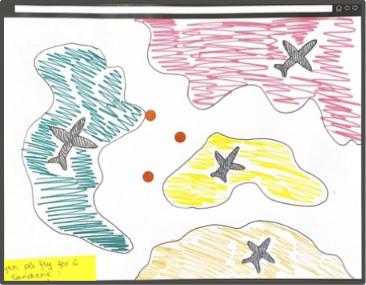
Concept: a flight across the mapA world map with a plane over each region. Tapping a plane opens the emission data for that country, so the user explores the numbers by travelling across the map. The orange dots are the participants' votes. 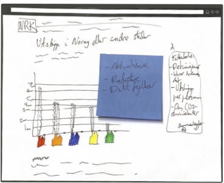
Concept: emissions as factory smokeA news-article concept, "Emissions in Norway or elsewhere". Each bar in the chart is smoke rising from a factory chimney, so higher emissions look like more smoke. A fact box explains definitions, where the emissions come from, emissions per person and CO₂ equivalents, with sources. The smoke metaphor became the starting point for the Compare view in FUSE.
- Part 1
1st prototype
The first iteration was a paper prototype inspired by the mockups, slightly adjusted to fit the personas and available data that we could find. We sketched every component we wanted to implement on an A3 paper, to make it appear as a desktop interface.
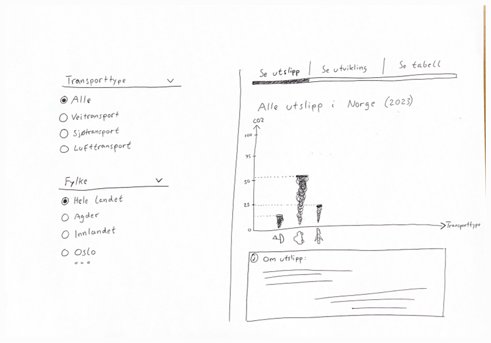
1234- Navigation MenuAllows the user to toggle between three different views: a bar chart/pictogram, line chart or table.
- Bar Chart
- Filter MenuAllows the user to narrow down the data displayed, either by transport or counties.
- Text BoxProvides the user with context of the data visualization.
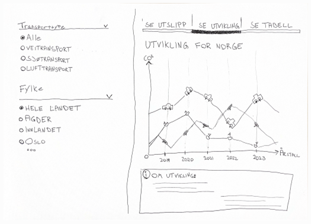
Line Chart 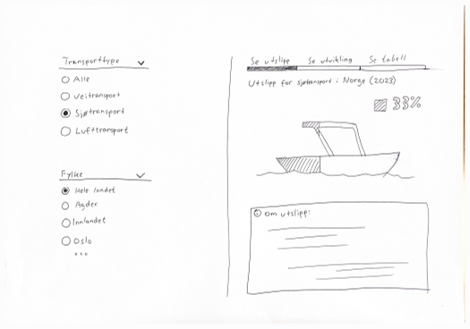
Pictogram 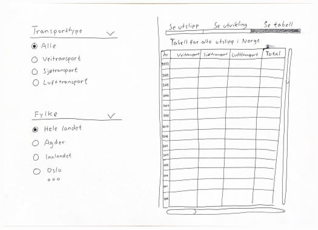
Table 1st usability test
The paper prototype was tested in quick 15-minute sessions with students recruited around campus.
- Intuitive interface
- The filter menu was too big
- The bar charts felt childish
5 participants2nd prototype
A mid-fidelity prototype in Figma with a predefined user journey, built on real emission data and real text examples instead of placeholders.
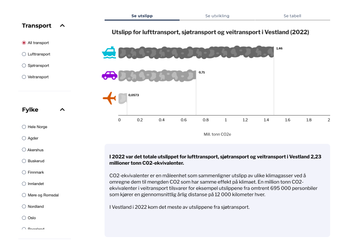
1234- Navigation MenuToggles between emissions, development over time and the table.
- Bar Chart
- Filter MenuTransport type and county, now with every county in Norway.
- Text BoxExplains the numbers in plain language, with an everyday comparison.
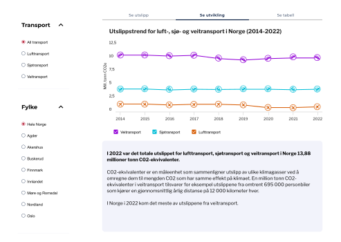
Line Chart 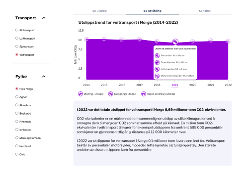
Hover details 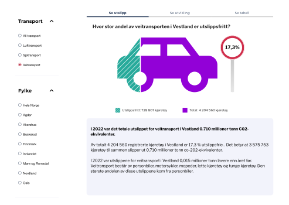
Pictogram 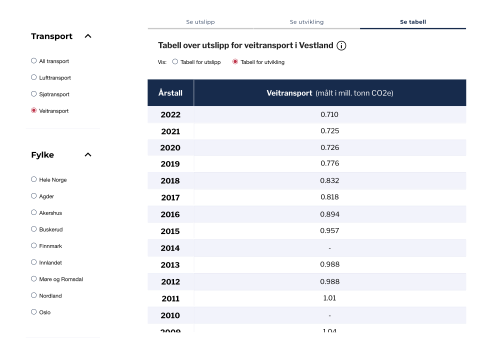
Table 2nd usability test
A side-by-side test compared horizontal and vertical bar charts and the right amount of data to visualize.
- Intuitive interface
- Wanted to compare data with other countries
- Overlooked the text box
5 participantsFinal prototype
The third iteration became the final prototype – the solution shown at the top. Compared to the second prototype:
- After the side-by-side test, the bars became vertical – the smoke now rises from industrial pipes, so higher emissions look like taller, darker smoke.
- The views got clear, action-based names – Compare, Explore and Verify – instead of “See emissions”, “See development” and “See table”.
- Change over time is visible at a glance: data points in the line chart and arrows in the table show whether emissions went up, down or stayed the same.
Workshop concepts
Flight across the map Emissions as smoke 1st prototype (paper)
Bar chart Line chart Pictogram Table 2nd prototype (mid-fi)
Bar chart Line chart Hover details Pictogram Table Final prototype
Compare Explore Verify 3rd usability test
The final prototype was tested with three students. No changes were made after this last round.
- Most liked how the data was presented
- Still wanted to compare with data from other countries
- Not everything was interactive
3 participants
Charm
- Augmented reality
- Unity
- Body interaction
The challenge
Develop a prototype in Unity focusing on Augmented Reality and Body Interaction. None of the four of us had prior experience with Unity, and the task was very open-ended – so everyone created a storyboard, and we voted on the proposal we liked best.
The solution

Charm – a magical AR experience
The user becomes a wizard, and the phone camera turns the room into the game. A glow shows that the right hand is tracked, hand movements conjure magical items like a dragon egg, and new movements move them, change them or trigger special effects. The hand is tracked with position recognition: actions fire when the hand enters predefined areas of the screen.
The process
Storyboard
With an open-ended brief and no prior Unity experience, everyone in the team sketched a storyboard of their own idea. We voted on the proposal we liked best: a wizard who casts spells with hand movements.
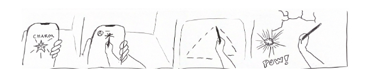
Minimum viable product
All interactions are made with the user's right hand: a glow indicating that the hand is tracked, creating a virtual object by hand movement, moving and modifying it, and movements that trigger special effects.
Free-hand recognition
Our preferred solution, with the potential to recognize multiple postures and movements – but with our experience and time limits, we never managed to recognize a specific hand posture.
Shape recognition
If the script could recognize shapes drawn by the hand, different magic tricks could be triggered for different shapes.
Collider recognition
Interacting with hidden game objects to change the colour of the hand glow – easier said than done when the objects are invisible.
Position recognition
The approach we chose: predefined areas that trigger actions when the hand enters them.
Wolftech Feeds
- Design Sprint
- Workshops
- Usability testing
The challenge
How can we improve an existing solution in an established news production platform? Wolftech described Feeds as a tool in its early stage that had not been given much attention yet. Our challenge was to look at how journalists do research, and how Feeds can make the research process easier and more efficient.
The solution
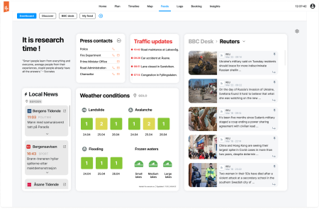
Dashboard
A modular dashboard the journalist puts together from widgets – local news, press contacts, traffic updates, weather warnings and wire feeds. Content, size and position are entirely up to the user.

Discover
News stories filtered by the user's preferences and placed on a map, so the journalist can open a story and explore what else is happening in the same area.

Keyword search
An integrated search that narrows down the content in the Feeds columns, with sorting by top stories, newest, oldest or alphabetically, and columns the user can edit.
Design process
- Interviews
- Design Sprint
- 1st prototype
- 1st user testing
- Iteration workshop 1
- 2nd prototype
- 2nd user testing
- Iteration workshop 2
- Final prototype
The process
Interviews
Five interviews over Zoom with experienced journalists from different newsrooms, to understand how they research a story, what slows them down and what motivates them.
- DagbladetSocial Issue JournalistLively, social and kind
- TV 2Sports JournalistTalkative, critical and hardworking
- NRKEconomic JournalistHappy, patient and curious
- NRKPolitics JournalistAnalytical, curious and impatient
- AgderpostenPolitics JournalistAnalytical, curious and impatient
Design Sprint
A Google Design Sprint together with Wolftech employees, run as three workshops.
- Part 1
Alignment workshop
We mapped the journalist's research process in a high-level map and turned the pain points into How Might We questions. A dot vote picked the questions worth solving.
- HMW make it easier to know where the best resources are
- HMW make it easier for journalists to get in contact with sources
- HMW make it easier to find content that is interesting for the story
- Part 2
Solution workshop
Everyone sketched on their own in four steps, going from rough notes to a detailed solution sketch.
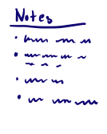
1. Notes 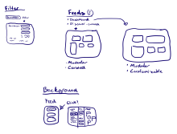
2. Doodling 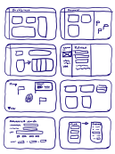
3. Crazy 8's 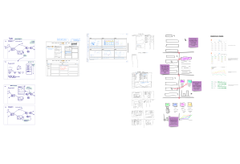
4. Solution sketches - Part 3
Decision workshop
The strongest solution sketches were combined into a storyboard – the blueprint for the first prototype.
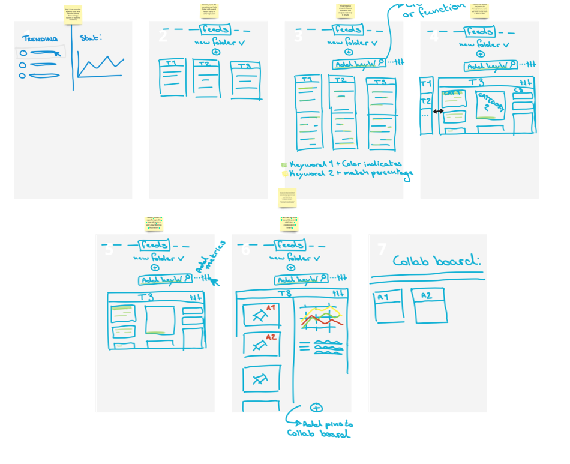
- Part 1
1st prototype
The first prototype built on the storyboard, to complement the existing Feed function in Wolftech News. We listed five ideas to prototype – Dashboard, Statistics, Collaboration, Keywords and Personalisation – and each group member drafted one. A vote decided which idea to take further: Keywords, which became a keyword search with an advanced filter.
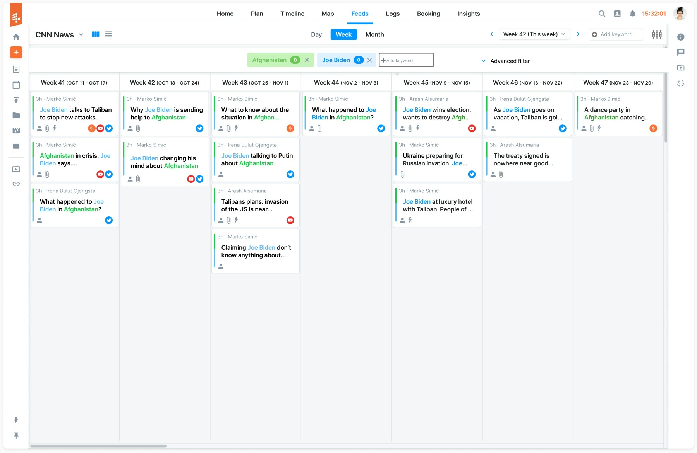
1st user testing
The goal was to find out whether the keyword search and advanced filter worked for our target group. Since most Wolftech customers are international news agencies, we tested over Zoom and followed the participants through screen sharing. The hectic everyday life of journalists made them close to impossible to recruit, so we had to settle for participants outside the target group.
- WolfTech
- WolfTech
- WolfTech
- WolfTech
- BBC
Affinity map
We sorted and prioritized the feedback from the tests in an affinity map, grouped by feature.
FeedAdvanced filterAdd keywords
Iteration workshop 1
We reviewed the test results, decided which direction to go, and took a step back to bring in the drafts from earlier.
- Part 1
Specify target group
The Wolftech staff prioritized types of journalists by spending money from an imaginary, limited budget. The breaking news journalist came out on top.
- Breaking news journalist
- Politics journalist
- Economic journalist
- Sports journalist
- Part 2
Solution sketch
Together with the Wolftech employees, we made a solution sketch focused on personalization and the individual needs of each journalist.
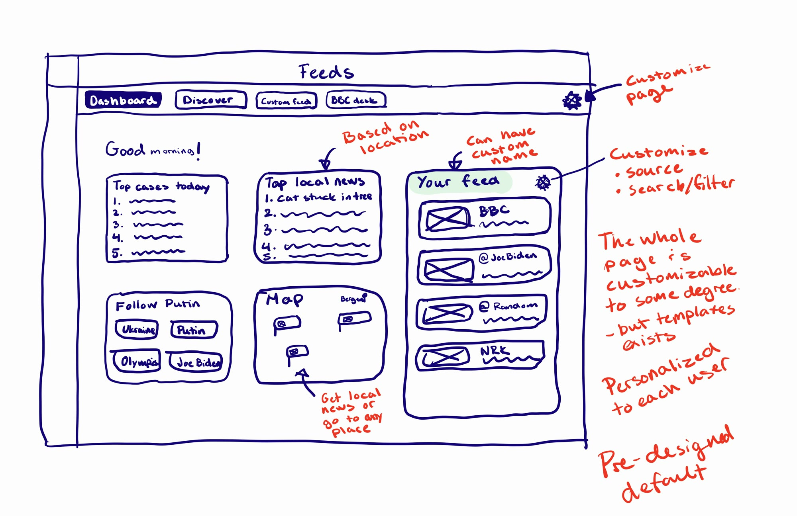
- Part 1
2nd prototype
The main focus was a dashboard with everything a journalist needs at a glance. Instead of improving existing solutions, we tried new ones – which opened up a lot of possibilities. The user can move between a Dashboard with widgets, a Discover page, a pre-designed, curated Feeds page and a personal Feed page.
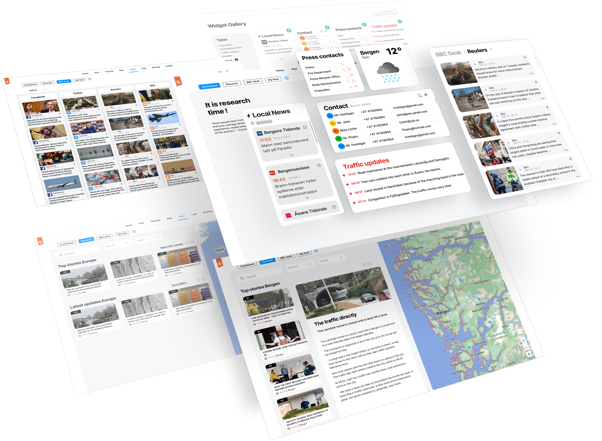
2nd user testing
The goal was to see how the target group perceived the new concepts – Dashboard, Discover and Keyword search. We expected most participants to be active users of the Wolftech system, but only one of our three journalists was. The feedback was valuable, but too thin to draw firm conclusions from.
- SWR
- BBC
- WolfTech
Iteration workshop 2
The feedback on the design and its direction was positive, but getting the right participants was still our main struggle. We designed our own iteration workshop to decide which part of the prototype needed more focus, and how to reach the target group.
- Part 1
Organising feedback
The sailboat exercise split the feedback into what pushed the design forward and what held it back, grouped by topic – a visual way to see where the main issues were.
- Part 2
Voting on further focus
Every participant had one vote, choosing between Dashboard, Discover, BBC Desk and My Feed. Discover won and became the main focus moving forward.
- Discover
- Dashboard
- BBC Desk
- My Feed
- Part 1
Final prototype
Three designs that make the research process faster and more interactive: Dashboard, Discover and Keyword search – shown in the solution above. From five early ideas to the final prototype:
Five different ideas
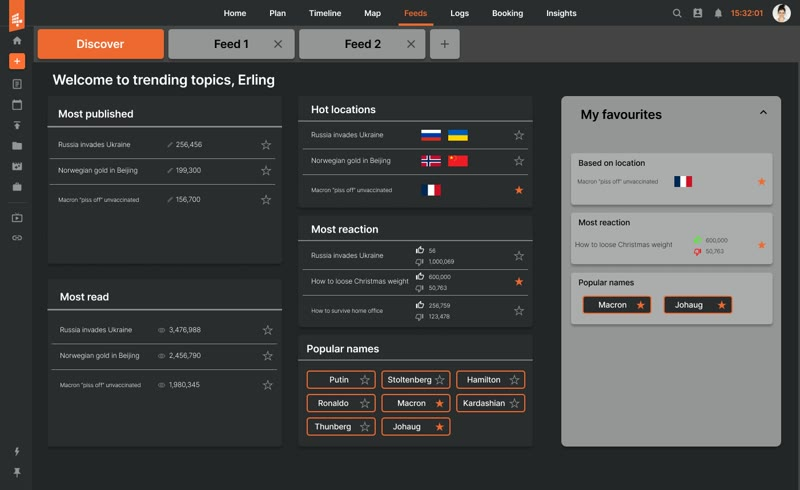
Dashboard 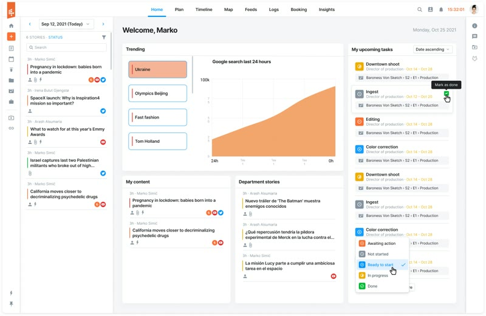
Statistics 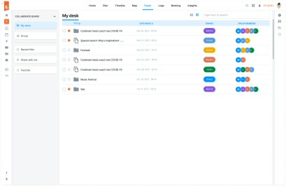
Collaboration 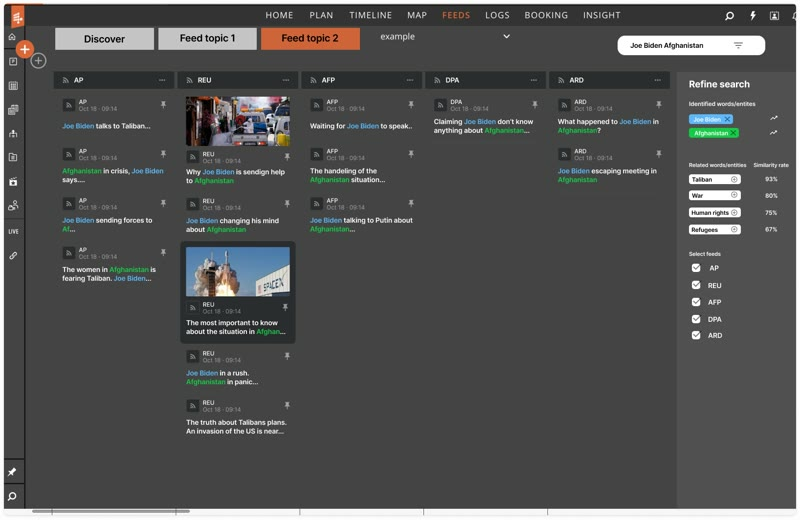
Keywords 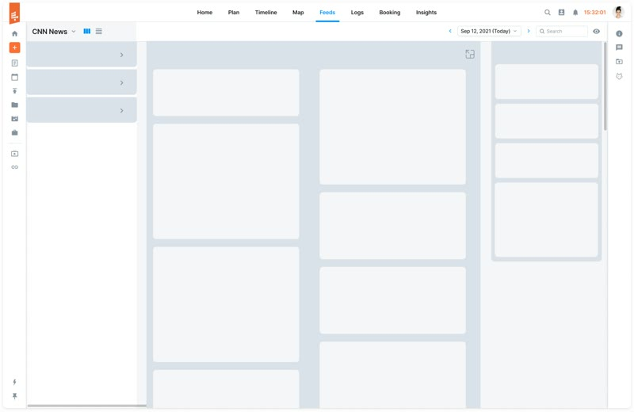
Personalisation First prototype
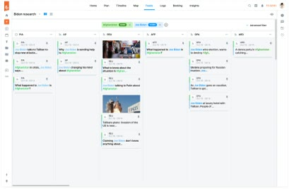
Keywords 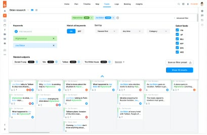
Advanced filter Second prototype
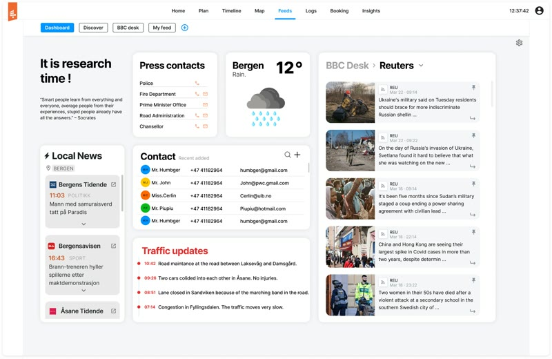
Dashboard 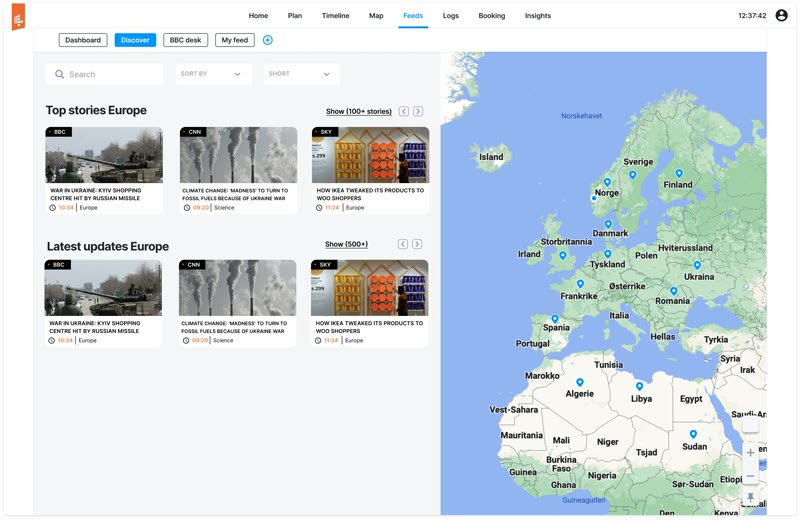
Discover My Feed BBC Desk Final prototype
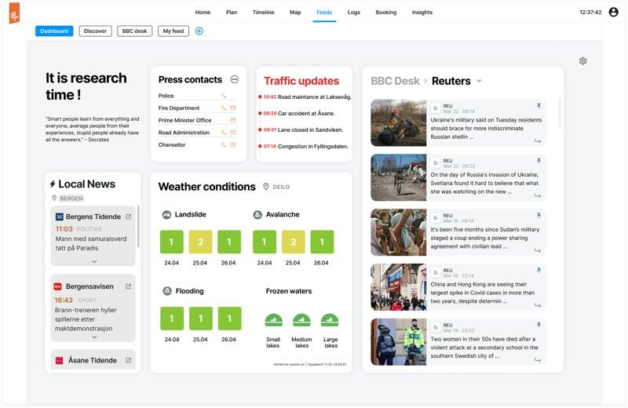
Dashboard 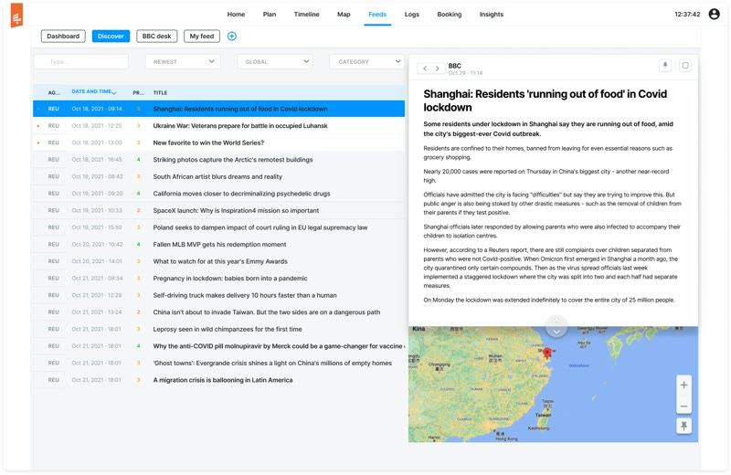
Discover 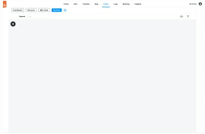
My Feed 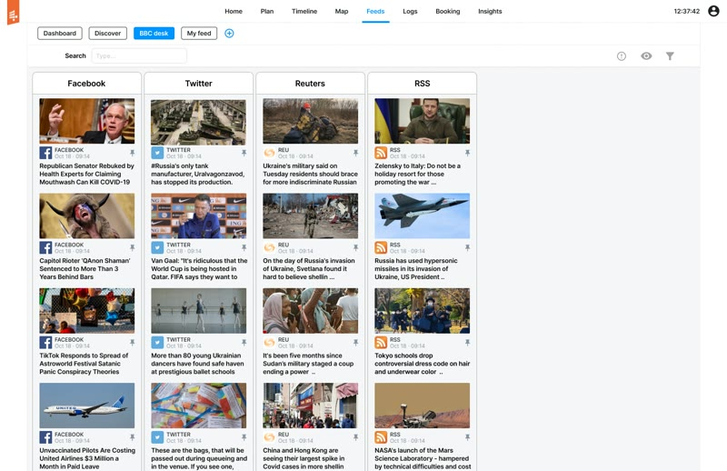
BBC Desk
TV 2 Xplore
- Streaming
- Visual design
- Usability testing
The challenge
Design a user interface in collaboration with TV 2 for their streaming service TV 2 Play, tailored to young adults with children. The challenge in streaming services is finding the balance between too much and too little content on the home page – showing users that there is plenty of exciting content for them, without overwhelming them.
The solution
Landing page
A visual design inspired by the universe – a universe of undiscovered content, sparking curiosity with color contrasts, varying shapes and figures.
Tailored content
Breaking away from the monotonous presentation of the streaming giants with creative shapes, sizes and colors. XPLORE is unique for each user, reflecting their personal interests.
Exploration mode
A positive filter bubble that minimizes scrolling, frustration and uninteresting recommendations, which can lead to subscription cancellations.
The process
Interviews
Interviews with young adults with children about their use of and preferences for streaming services.
Think aloud
Three participants navigated TV 2 Sumo, NRK TV or Netflix while sharing their thoughts.
1st prototype
A simple prototype to test our ideas: dragging favorite categories up and down, further filtering for more personalized content, and the best possible alternative when a title isn't available.
Usability testing
Two iterations with three participants each, analyzing the results and updating the prototype after each round.
Twerton Park
- 3D modelling
- Autodesk Maya
The challenge
Create a piece of environment modelling that responded to my experience of Bath with the 3D software Autodesk Maya, and make a short movie. I chose Twerton Park, the football stadium of Bath City FC, because I spent a lot of my time in England travelling around to watch football matches.
The process
Research
Gathered pictures of Twerton Park from the web and visited the stadium myself to take pictures.
Polygonal modelling
With no prior 3D experience, I learned Maya's most important features through a tutorial from our tutor and built the model using polygonal modelling.
Car Ride
- 3D
- Cinema 4D
- After Effects
The challenge
Create a landscape of our own choice and make a short film with a car driving through the landscape. We used Cinema 4D during the last three weeks of the course, after being introduced to Adobe Animate and Adobe After Effects.
The process
Car and road
Started with the car and the road, and worked on getting the car to drive smoothly – the most difficult part was getting it over the bridge.
Landscape
Added mountains, grass, water, trees and stones – and since it took less time than expected, also a boat, a house and flowers.
Film
Placed cameras in the scene, made different clips and rendered the short film in Adobe After Effects.
Let's connect
Skills & tools
- User interviews
- Focus groups
- Workshop facilitation
- Google Design Sprint
- Prototyping
- Usability testing
- Data visualization
- Figma
- Unity (AR)
- Autodesk Maya
- Cinema 4D
- Adobe After Effects